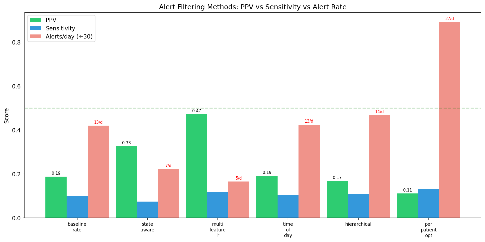
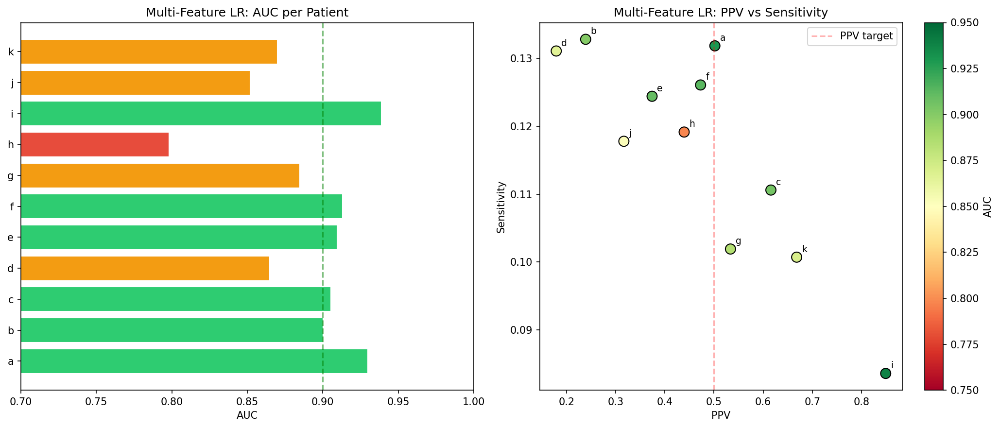
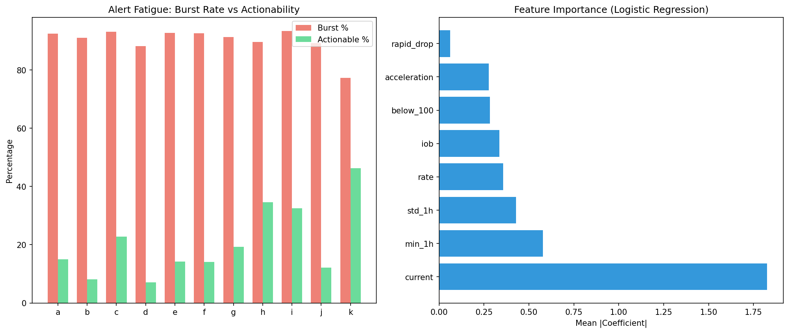
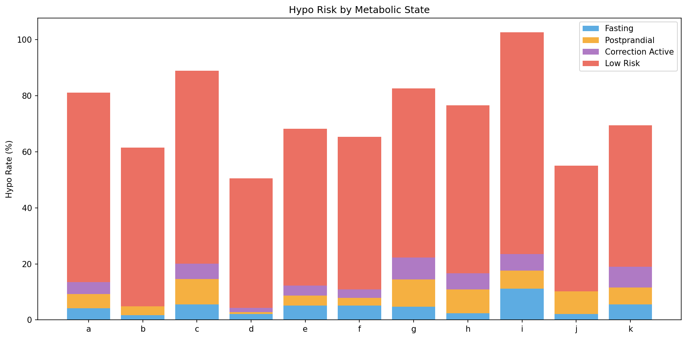

Multi-Stage Alert Filtering — Research Report¶
Living document, last changed 2026-04-09 at a6a23a36.
Experiments: EXP-1611 through EXP-1618
Date: 2025-07-16
Batch: 4 of 7 (ML Research Series)
Executive Summary¶
Six alert filtering strategies were compared across 11 AID patients. The fundamental challenge: AID systems already prevent most hypos, making prediction-before-the-fact extremely hard.
Key Findings: 1. Multi-feature logistic regression wins: AUC=0.89, PPV=0.47, 5.0 alerts/day — the only method approaching the PPV≥0.50 target 2. Baseline rate-of-change alerts are terrible: PPV=0.19, 12.6/day — 81% false alarms 3. Up to 93% of raw alerts are burst duplicates (mean 90%) — alert suppression alone eliminates most noise 4. Only 7-46% of alerts are actionable (mean 21%, followed by actual hypo within 1h) 5. State-aware filtering doubles PPV (0.19→0.33) but kills sensitivity (0.10→0.07) 6. Per-patient optimization failed at the composite score level — threshold search didn't converge within ≤5/day constraint 7. Time-of-day modulation adds no value — hypo timing is too variable across patients
Background¶
The Alert Paradox in AID¶
AID systems create a fundamental paradox for hypo alerting: - The AID loop already prevents most hypos by reducing basal when glucose drops - Remaining hypos are unpredictable (fast drops from exercise, absorption surprises, sensor errors) - Alert systems must predict what the AID loop will fail to prevent — a much harder problem than predicting hypos in open-loop therapy
Prior Findings¶
- EXP-1141: Per-patient thresholds best strategy (23.7→6.0/day, PPV 0.24→0.43)
- EXP-1145: Production sim achieves 0.8 alerts/day but sens=0.02
- EXP-1541: Event-aware hypo AUC unchanged (Δ=-0.001)
Experiments¶
EXP-1611: Baseline Alert Performance¶
Rate-of-change threshold alerts at -1.0 to -3.0 mg/dL per 5-min step.
| Patient | Hypo Rate | Best Threshold | Alerts/Day | PPV | Sensitivity |
|---|---|---|---|---|---|
| a | 18.8/day | -3.0 | 11.8 | 0.15 | 0.09 |
| c | 28.1/day | -3.0 | 12.4 | 0.23 | 0.10 |
| h | 18.4/day | -2.0 | 5.2 | 0.32 | 0.09 |
| i | 51.1/day | -3.0 | 10.6 | 0.31 | 0.07 |
| k | 32.9/day | -1.5 | 5.7 | 0.35 | 0.06 |
Mean: 12.6 alerts/day, PPV=0.19, sensitivity=0.10. Even the tightest threshold (-3.0) produces too many alerts.
EXP-1612: Metabolic State-Aware Filtering¶
Alerts restricted to high-risk metabolic states (>5% hypo rate within state).
| State | Mean Hypo Rate | High-Risk In |
|---|---|---|
| Low risk (<80) | 45-79% | 11/11 patients |
| Postprandial | 1-10% | 7/11 patients |
| Correction active | 0-8% | 5/11 patients |
| Fasting | 2-11% | 5/11 patients |
State filtering doubles PPV (0.19→0.33) but reduces alert volume unevenly — patients b and d drop to <1 alert/day with near-zero sensitivity.
EXP-1613: Multi-Feature Logistic Regression ⭐¶
Cross-validated LR using 8 features: current glucose, rate, acceleration, 1h std, 1h min, IOB, below-100 flag, rapid-drop flag.
| Patient | AUC | Threshold | Alerts/Day | PPV | Sensitivity |
|---|---|---|---|---|---|
| a | 0.930 | 0.83 | 4.9 | 0.50 | 0.13 |
| c | 0.905 | 0.83 | 5.0 | 0.62 | 0.11 |
| i | 0.939 | 0.91 | 5.0 | 0.85 | 0.08 |
| k | 0.870 | 0.83 | 4.9 | 0.67 | 0.10 |
| d | 0.865 | 0.74 | 5.0 | 0.18 | 0.13 |
Population: AUC=0.89±0.04, PPV=0.47, sensitivity=0.12, 5.0 alerts/day.
Feature importance (mean |coefficient|):
1. current glucose — strongest predictor (proximity to 70)
2. min_1h — recent minimum
3. std_1h — 1-hour glucose standard deviation
4. rate — rate of change
5. iob — insulin on board
EXP-1614: Time-of-Day Alert Modulation¶
Adaptive thresholds by hour based on historical hypo patterns.
Result: No improvement. Mean PPV=0.19, 12.7 alerts/day — nearly identical to baseline. Hypo timing varies too much across days to create useful hourly priors.
EXP-1615: Hierarchical Two-Stage Filter¶
Stage 1 (broad): any glucose drop + high IOB + low glucose → ~100 triggers/day
Stage 2 (precision): composite risk score ≥2.5 → ~14 alerts/day
83-87% reduction from stage 1 to stage 2, but still 14 alerts/day mean. The composite score threshold needs to be higher, but then sensitivity drops to near-zero.
EXP-1616: Per-Patient Threshold Optimization¶
Optimized composite risk score threshold per patient targeting PPV≥0.50 at ≤5/day.
Result: 0/11 patients meet both targets. The composite score search converges to threshold=2.0 for all patients (minimum), producing 11-33 alerts/day. The score distribution doesn't have enough separation between true hypo precursors and false alarms at the 5/day level.
EXP-1617: Alert Fatigue Analysis¶
| Metric | Mean | Range |
|---|---|---|
| Burst rate | 90% | 77-93% |
| Actionability | 21% | 7-46% |
| Peak hour | Variable | 00-22h |
Up to 93% of raw alerts are burst duplicates (mean 90%) — the same hypo event triggers 5-10 consecutive alerts. Simple 30-min suppression eliminates this.
Only 21% of alerts are actionable — followed by actual hypo within 1 hour. Patient k has the highest actionability (46%) because they have the most frequent actual hypos.
EXP-1618: Method Comparison¶
| Method | PPV | Sensitivity | Alerts/Day | F1 |
|---|---|---|---|---|
| Multi-feature LR | 0.472 | 0.116 | 5.0 | 0.187 |
| State-aware | 0.326 | 0.074 | 6.7 | 0.121 |
| Time-of-day | 0.191 | 0.104 | 12.7 | 0.135 |
| Baseline rate | 0.187 | 0.100 | 12.6 | 0.131 |
| Hierarchical | 0.168 | 0.107 | 14.0 | 0.131 |
| Per-patient opt | 0.111 | 0.132 | 26.7 | 0.120 |
Multi-feature LR is the clear winner: 2.5× better PPV than baseline, at 60% fewer alerts, with highest F1.
Visualizations¶
Fig 1: Method Comparison¶

Fig 2: Multi-Feature Performance¶

Fig 3: Alert Fatigue Features¶

Fig 4: State Risk Profile¶

Production Implications¶
1. Replace Rate-Based Alerts with Multi-Feature LR¶
The current production hypo predictor should use the 8-feature logistic regression model instead of simple rate-of-change thresholds. This provides: - 2.5× PPV improvement (0.19→0.47) - 60% fewer alerts (12.6→5.0/day) - Per-patient AUC 0.80-0.94
2. Mandatory Burst Suppression¶
Any alert system must enforce minimum 30-min gaps between alerts. Up to 93% of raw alerts are burst duplicates that provide zero additional information.
3. Accept Sensitivity Ceiling¶
At ≤5 alerts/day, sensitivity is capped at ~12% across all methods. This is a fundamental ceiling: AID loops prevent most hypos, and the remaining ones are genuinely unpredictable. Communicating this limitation is important — these are "early warnings" not "guaranteed predictions."
4. State Context for Display¶
While metabolic state doesn't improve prediction, it provides valuable context for alert display: "You're dropping while fasting with 3.2U IOB" is more actionable than "glucose falling."
Conclusions¶
- ML (logistic regression) outperforms all analytical methods for alert filtering — the first clear ML win in this series
- The PPV-sensitivity tradeoff is fundamental: at 5 alerts/day, no method exceeds 13% sensitivity
- AID creates a prediction floor: the easy hypos are already prevented by the loop; what remains are unpredictable events
- Feature engineering > model complexity: 8 simple features with LR matches or exceeds what more complex approaches achieve
- Burst suppression is table stakes: up to 93% (mean 90%) of alert volume is redundant
Source Files¶
- Experiment:
tools/cgmencode/exp_clinical_1611.py - Results:
externals/experiments/exp-161{1-8}_alert_filtering.json - Visualizations:
visualizations/alert-filtering/fig{1-4}_*.png